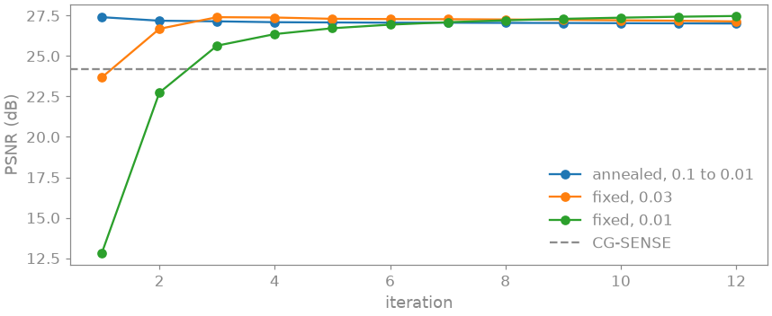
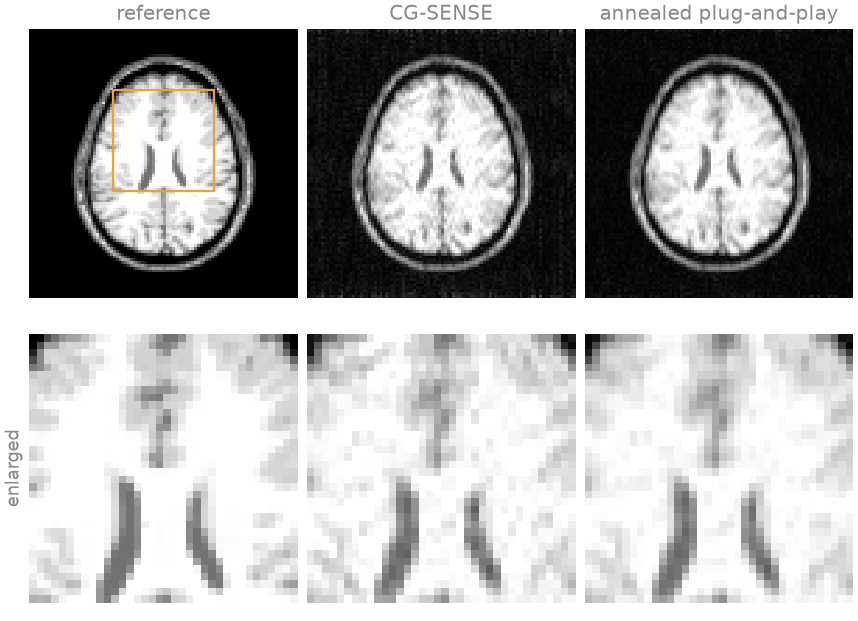
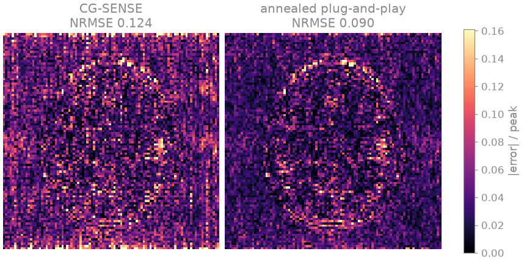
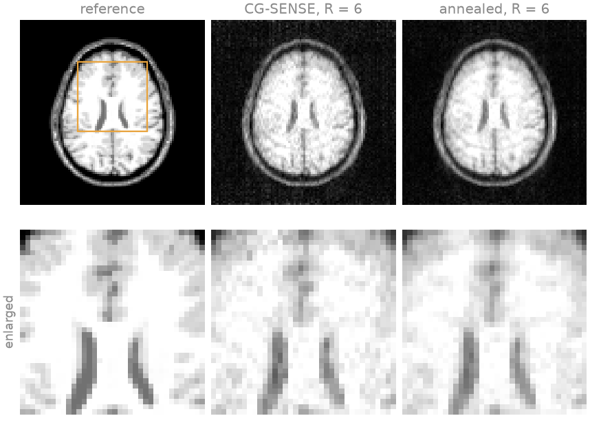
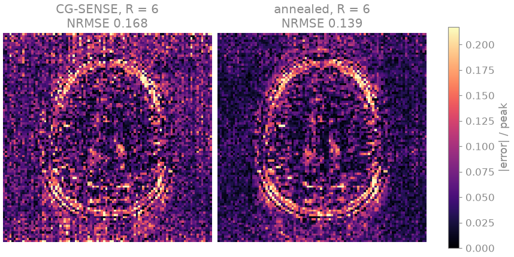

Note
Go to the end to download the full example code.
Annealed plug-and-play#
Aim. Train one denoiser on images alone, without any encoding, and use it as the regularizer of an ADMM reconstruction at any undersampling, with the denoising strength decreasing over the iterations; show that it holds up at an acceleration where CG-SENSE breaks down.
A plug-and-play reconstruction [1] replaces the proximal step of an iterative algorithm by a denoiser. The denoiser is trained on images, not on k-space, so one network serves every protocol whose images resemble its training images: a change of acceleration, sampling pattern or coil array needs no retraining. The proximal step of a regularizer \(\lambda\phi\) with ADMM penalty \(\rho\) is a Gaussian denoiser of noise variance \(\sigma^2 = \lambda/\rho\). The first iterates carry the strong incoherent aliasing of the undersampling and the last are nearly consistent with the data, so a noise level that decreases from one to the other [2] removes the aliasing first and preserves fine anatomy at the end. The penalty follows as \(\rho_k = \lambda/\sigma_k^2\), which keeps the balance between data consistency and denoising that \(\lambda\) sets.
Prerequisites. Plug-and-play denoisers and MoDL, on BART’s ADMM.
Learning objectives
Train a denoiser conditioned on the noise level,
noise=Trueinbartorch.learning.UNet, withbartorch.learning.Reconstruction.Give
bartorch.priors.ImplicitPriora schedule of noise levels andbartorch.optim.ADMMBlockthe matching schedule of penalties.Compare an annealed schedule with a fixed noise level, iteration by iteration, and apply the same denoiser at a higher acceleration.
import csv
import logging
from pathlib import Path
import brainweb_dl
import lightning
import numpy as np
import torch
from brainweb_dl import get_mri
from monai.metrics import PSNRMetric
from torch.utils.data import DataLoader
import bartorch
import bartorch.tools as bt
from bartorch import learning, linop, optim, priors
SIZE = 96
COILS = 8
ITERATIONS = 12
_ = torch.manual_seed(0)
Data#
The slices, coils and fourfold undersampling of Staged training of an unrolled network: subject 0 to train the denoiser on, subject 4 to reconstruct.
train_images = brain_slices(subject=0, count=24)
valid_images = brain_slices(subject=4, count=8)
sensitivities = bt.coils(t=bt.grid(D=(SIZE, SIZE, 1)), n=COILS)[:, 0]
sensitivities = sensitivities / bartorch.rss(sensitivities, axes=(0,), keepdim=True)
NOISE = 0.02
def acquisition(acceleration, seed):
"""A Cartesian SENSE encoding sampling one line in ``acceleration`` on average."""
density = torch.exp(-0.5 * ((torch.arange(SIZE) - SIZE / 2) / (SIZE / 6)) ** 2)
chance = density / density.sum() * (SIZE / acceleration)
lines = torch.rand(SIZE, generator=torch.Generator().manual_seed(seed)) < chance
lines[SIZE // 2 - 4 : SIZE // 2 + 4] = True
pattern = lines.to(torch.complex64)[:, None].expand(SIZE, SIZE).contiguous()
return linop.CartesianSense(sensitivities, (SIZE, SIZE), pattern=pattern)
def measure(A, generator):
return [
A(x) + NOISE * torch.randn(A.oshape, dtype=torch.complex64, generator=generator)
for x in valid_images
]
A = acquisition(4, seed=1)
kspace = measure(A, torch.Generator().manual_seed(3))
A denoiser for every noise level#
With noise=True the U-Net takes the noise level as an input and
modulates its features with it, so one network covers a range of SNRs. It is
trained on pairs of a slice and the same slice with complex white Gaussian
noise, at a standard deviation drawn log-uniformly between 0.5 and 20 per
cent of the image’s peak for each pair
(ComplexNet scales each image to unit peak). No
coil sensitivities, sampling pattern or k-space enter the training.
LOW, HIGH = 0.005, 0.2
network = learning.UNet(2, spatial=2, widths=(16, 32, 64), noise=True)
denoiser = learning.ComplexNet(network, spatial=2)
def pairs(images):
made = []
for x in images:
sigma = LOW * (HIGH / LOW) ** torch.rand(())
noisy = x + sigma * torch.randn_like(x)
made.append({"input": noisy, "target": x, "sigma": sigma.reshape(1)})
return made
trainer = lightning.Trainer(
max_epochs=30,
accelerator="cpu",
logger=False,
enable_checkpointing=False,
enable_model_summary=False,
enable_progress_bar=False,
)
trainer.fit(
learning.Reconstruction(denoiser, "denoiser", lr=2e-3),
DataLoader(train_images, batch_size=4, shuffle=True, collate_fn=pairs),
DataLoader(valid_images, batch_size=4, collate_fn=pairs),
)
psnr = PSNRMetric(max_val=1.0)
truth = torch.stack(valid_images).abs()[:, None]
def score(images):
return float(psnr(images.abs()[:, None], truth).mean())
with torch.no_grad():
for sigma in (0.01, 0.05, 0.1):
noisy = torch.stack(valid_images)
noisy = noisy + sigma * torch.randn_like(noisy)
denoised = torch.stack([denoiser(x[None], torch.tensor([sigma]))[0] for x in noisy])
print(
f"sigma {sigma:4.2f}: noisy {score(noisy):5.2f} dB, denoised {score(denoised):5.2f} dB"
)
/opt/hostedtoolcache/Python/3.12.14/x64/lib/python3.12/site-packages/lightning/pytorch/utilities/_pytree.py:21: `isinstance(treespec, LeafSpec)` is deprecated, use `isinstance(treespec, TreeSpec) and treespec.is_leaf()` instead.
/opt/hostedtoolcache/Python/3.12.14/x64/lib/python3.12/site-packages/lightning/pytorch/trainer/connectors/data_connector.py:434: The 'val_dataloader' does not have many workers which may be a bottleneck. Consider increasing the value of the `num_workers` argument` to `num_workers=3` in the `DataLoader` to improve performance.
/opt/hostedtoolcache/Python/3.12.14/x64/lib/python3.12/site-packages/lightning/pytorch/trainer/connectors/data_connector.py:434: The 'train_dataloader' does not have many workers which may be a bottleneck. Consider increasing the value of the `num_workers` argument` to `num_workers=3` in the `DataLoader` to improve performance.
sigma 0.01: noisy 41.46 dB, denoised 41.13 dB
sigma 0.05: noisy 27.17 dB, denoised 27.16 dB
sigma 0.10: noisy 21.06 dB, denoised 21.06 dB
Schedules of noise level and penalty#
ImplicitPrior takes a sequence of noise levels,
one per iteration, and ADMMBlock a sequence of
penalties; the last value of each is repeated past its end. The annealed
schedule decreases the noise level geometrically from 0.1 to 0.01 of the
peak over twelve iterations, and the penalty follows as
\(\rho_k = \lambda/\sigma_k^2\). When the penalty changes, the block
rescales ADMM’s scaled dual variable by the ratio of the old penalty to the
new, so that the unscaled one carries over. The two fixed schedules hold the
noise level at either end of the annealed one, with the penalty given by the
same \(\lambda\).
LAMBDA = 1e-4
schedules = {
"annealed, 0.1 to 0.01": torch.logspace(-1.0, -2.0, ITERATIONS),
"fixed, 0.03": torch.full((ITERATIONS,), 0.03),
"fixed, 0.01": torch.full((ITERATIONS,), 0.01),
}
def plug_and_play(sigma):
prior = priors.ImplicitPrior(denoiser, sigma=sigma.tolist())
block = optim.ADMMBlock(prior, rho=(LAMBDA / sigma**2).tolist(), cg_maxiter=5)
return learning.Unrolled(block, iterations=ITERATIONS)
curves, results = {}, {}
with torch.no_grad():
for name, sigma in schedules.items():
runs = [list(plug_and_play(sigma).steps(y, A)) for y in kspace]
iterates = [torch.stack([run[k] for run in runs]) for k in range(ITERATIONS)]
curves[name] = [score(images) for images in iterates]
results[name] = iterates[-1]
results["CG SENSE, 20 iterations"] = torch.stack([optim.cg(y, A, maxiter=20) for y in kspace])
for name, images in results.items():
print(f"{name:>24} PSNR {score(images):5.2f} dB")

annealed, 0.1 to 0.01 PSNR 27.01 dB
fixed, 0.03 PSNR 27.14 dB
fixed, 0.01 PSNR 27.48 dB
CG SENSE, 20 iterations PSNR 24.21 dB
A large fixed noise level converges within a few iterations, to an image limited by the smoothing the denoiser applies at that level. A small one preserves detail, but its large penalty makes each ADMM step move little from the previous one, and twelve iterations do not reach its fixed point. The annealed schedule takes the large steps first and the small ones last, and ends slightly ahead of the better fixed level without that level having to be tuned for the acquisition.


Another acquisition, the same denoiser#
The denoiser was trained without an encoding, so it applies unchanged to \(R = 6\), a sampling pattern it has never been used with. At this acceleration eight coils no longer unfold the aliasing well: CG-SENSE is dominated by g-factor noise and residual aliasing, while the plug-and-play reconstruction keeps the anatomy.
A6 = acquisition(6, seed=2)
kspace6 = measure(A6, torch.Generator().manual_seed(4))
with torch.no_grad():
annealed = torch.stack(
[plug_and_play(schedules["annealed, 0.1 to 0.01"])(y, A6) for y in kspace6]
)
cg = torch.stack([optim.cg(y, A6, maxiter=20) for y in kspace6])
print(f"sixfold: annealed plug-and-play {score(annealed):5.2f} dB, CG SENSE {score(cg):5.2f} dB")


sixfold: annealed plug-and-play 23.72 dB, CG SENSE 21.98 dB
References#
Total running time of the script: (0 minutes 37.490 seconds)